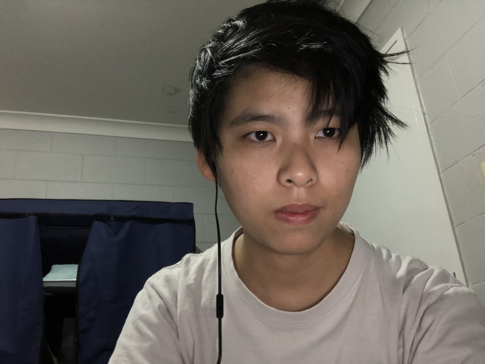

Name: Lynn Su Wai
Student ID: s3934613
Email: s3934613@student.rmit.edu.au
Profile Webpage:
Repo Webpage:
I am 32 years old and was born in Myanmar (Burma), I came to Australia in 2010 for further study.I have a Diploma of Electronics and Communications through TAFE NSW, Bachelor Degree of Engineering (Electrical) at University of Western Sydney. After I graduated from University, I moved to Dubbo, NSW Regional area and working full time. Dubbo is a nice and quiet place than Sydney. Since I can drive everywhere in Dubbo within 15 mins drive, there is no traffic jam in Dubbo. However, I have limited choice of Asian food, my favourite cuisine, in here. I love to watch Japanese anime and watching movies in my leisure time.
Go back to hyperlink page